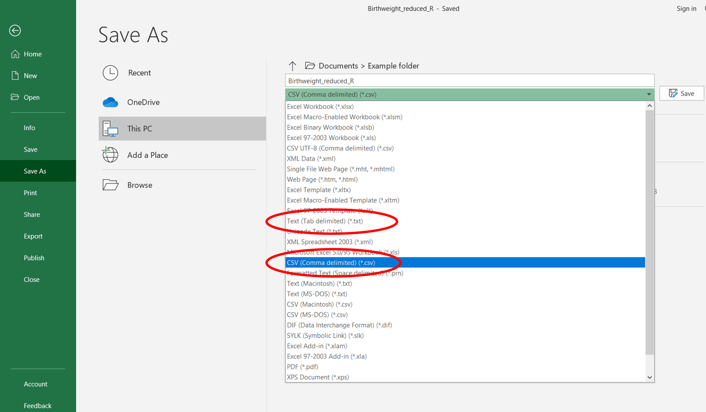
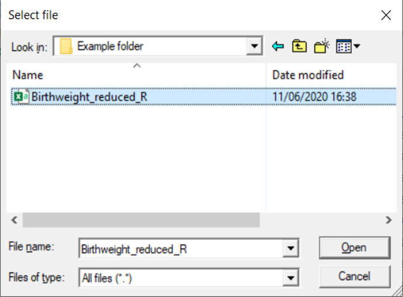
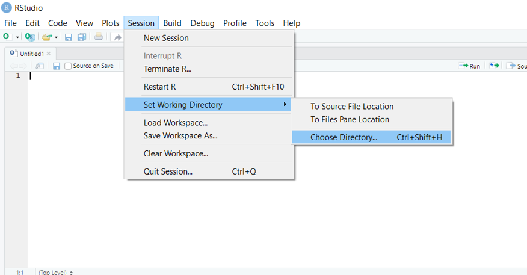
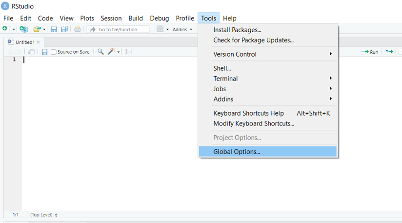
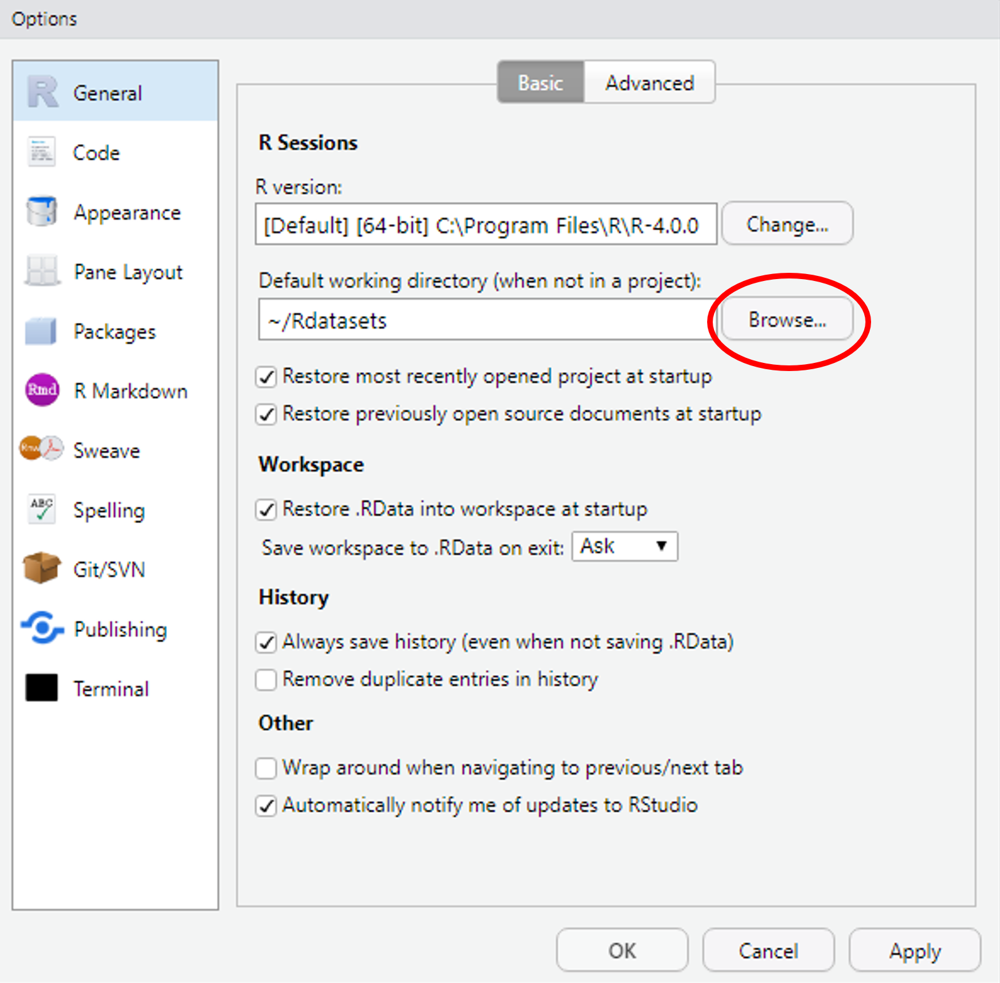
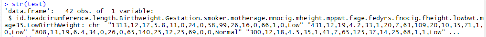

12 Importing Data
12.1 Introduction
This document is part of our “First Steps in R” resources. It is assumed that the reader understands how to define objects and call a function in R. If you would like to recap these topics, the documents and videos are on the MASH website.
This document provides a guide to some of the ways to import a dataset to R. It is by no means exhaustive! Users who are new to R may wish to use the suggested method below and read no further.
12.2 Preparing Data
It is sensible to ensure the data is well prepared to avoid any issues with reading data into R.
In this document, we will be reading data from an Excel file. Before importing the data to R, we must make sure that it is recorded in a way which will make it easy for R to read.
Here are some useful practices:
- Use short names for variables and sampling units
- Avoid names with symbols such as ?, $, %, ^, &, *, (, ), -, /, #, I, [, ], { and }.
- Avoid names, values and fields with blank spaces as they will be interpreted as separate variables, resulting in errors.
- Use . or _ to link words together if you need to, for example
gene.lengthorgene_length. - Do not make any comments in the Excel file. This will result in extra columns or NAs.
- Replace missing values with NA. R recognises NA as missing data but R would not recognise (for example) n/a as missing data.
12.3 Importing the Data - Suggested Method
This section focusses on one method for importing an Excel file, which I found easy to use when getting to know RStudio. You may prefer to stick to this method, at least until you are more familiar with R. Data can be imported to R in various ways from various different pieces of software and other possibilities are discussed at the end of this document.
In the examples we will use the “Birthweight” dataset which can be found at MASH. The reader can follow the methods described with any Excel dataset.
Whichever file you decide to use, before importing into R, save it as .txt (as tab-delimited text file) or .csv (comma delimited). To do this in Excel, just select the required file type when saving. In the examples we will use .csv.

.txt and .csv file type options when saving Excel files.
Next, we type the following into the console:
birthweight <- read.csv(file.choose())
This code allows us to browse for the file on the computer. The first part tells R that we are going to define a new object called “birthweight” (we could choose any name). Next we say that the definition of the object comes from the command “read.csv”. This tells R to create a data frame from the .csv file we are about to describe. The argument of the read.csv function is another function, “file.choose”. This function will open a window which allows you to browse your folders and select the file you want. Note: the window sometimes opens behind the RStudio window leaving the user to wonder where on earth it is!

file.choose() function as the argument of the read.csv function in RStudio.
Navigate to the folder where the file is, select the file and click “Open”.
The dataset has now been imported to R as a data frame. In the example, the data frame is called birthweight.
If the file is saved as a .txt instead of a .csv the above instructions can be followed using read.delim in place of read.csv.
12.4 Typing a File Path
The file path of the file can be typed directly into the read.csv function but you must remember:
- Put the file path in inverted commas
“file path…”. - Replace each “\(\backslash\)” with “\(\backslash \backslash\)”.
- The name of the file must end
.csv.
So a .csv file at this location:
C:Namefolder_reduced_R
can be read into R as a data frame called “test” using this command:
test <- read.csv(“C:\Users\User Name\Documents\Example folder\Birthweight_reduced_R.csv”)
Note that unless the file is in the working directory (see below) the file.choose() function is usually an easier option.
12.6 The Working Directory
R has a location where it will save files to and import data from by default. This is referred to as the working directory. You can query what R currently considers its working directory by running the command
getwd()
If a file is in the working directory and saved as a .csv then it can be imported to R as a data frame like so:
Name of data frame here<- read.csv(“Type file name here”)
Remember to include .csv in the file name. Files in this directory can be listed using the function:
list.files()
And the working directory can be changed like so:
setwd(“Type file path here”)
But remember to replace “\(\backslash\)” with “\(\backslash \backslash\)” in the file path. Alternatively, the menus can be used by going to Session -> Set Working Directory -> Choose Directory…

The new working directory is now set for the rest of the session. To change the working directory permanently, go to Tools -> Global Options…

Then select a new folder as the working directory by clicking “Browse…” here:

If you’re going to be importing and exporting lots of data to and from a particular folder, you may like to set this folder as your working directory at the beginning of a session. If you are working on multiple projects in R you could have one folder per project and change the working directory when you start work on a different project.
12.7 A Warning
Sometimes R will happily read data using an inappropriate function and create an object without raising an error. However, the data might be unusable. Hence, we should always check the data frame that we have created. Consider:
test <- read.delim(“Birthweight_reduced_R.csv”)
Here we have asked R to read a .csv file but we have used read.delim instead of read.csv.
If we examine our data frame using
head(test)or
str(test)or
summary(test)
we will see we have a problem.

Can you see what has happened?
The read.delim() is used for reading in data that is stored in a .txt file, and thus will read in the data as if it is a list.